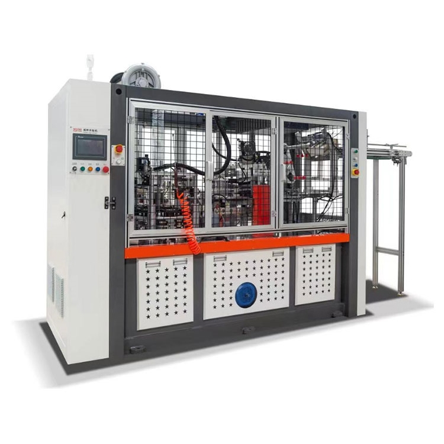

Simply put, this machine is a bit like our everyday thermos, with a two-layer interior. It sounds quite ordinary at first, right? But don't underestimate this small modification; it significantly improves the entire production process.
Its design concept is very advanced. The two-layer structure isn't just for show; it truly enhances efficiency. For example, in food processing, this machine ensures precise control of food temperature and humidity throughout the production process, resulting in higher-quality food and a safer process.

The convenience of double-wall machines
1. Precise Temperature Control
The biggest advantage of the double-wall structure is its excellent heat retention. Just like our thermos bottles keep water warm for extended periods of time, the double-walled machine also maintains a consistent internal temperature. If the temperature fluctuates slightly when producing food or medicine, the quality will be compromised. With a double-walled machine, you can rest assured that your production will always be at the optimal temperature.
2. Low Energy Consumption
The temperature inside the machine is very stable, so there's no need to keep it on all the time for heating, which naturally saves electricity. For a factory that operates 24 hours a day, even if only one kilowatt-hour of electricity is saved per hour, the electricity bill saved over the years can be considerable. Therefore, this double-walled machine not only has high production efficiency but also helps you save costs!
3. Simple Operation
Traditional machines require personnel to constantly adjust parameters based on experience, but double-walled machines automate many complex processes.
4. Ease of Maintenance
The double-wall design reduces thermal stress caused by temperature fluctuations, naturally extending the life of components.
To give you a more intuitive understanding of the performance of the double-walled machine, I'll explain its key parameters in detail using example tables.
Parameter
Specific Details
Paper Cup Sizes
4OZ-16OZ
Cup Top Diameter
70-95mm
Cup Bottom Diameter
50mm-75mm
Cup height
60-135mm
Cup Speed
100-120 pcs/min
Machine Net Weight
2800 kg
Rated Power
6 kW
Air Consumption
0.6-0.8 Mpa
Machine Size
L3300 x W950 x H2000 MM
Paper Grams
Grey/White Board Paper in the range of 170-300 gsm
FAQs
Is it difficult to operate?
Let me tell you, our user interface is designed for quick familiarity. We also provide detailed training videos and an operator's manual.
Does your double-wall machine have any international certifications?
Our company has obtained ISO9001-2000 quality management system certification and EU CE certification.
How do I install the machine after I purchase it?
Once the machine is installed in your facility, we will dispatch dedicated technicians to assist with installation.
We use cookies to offer you a better browsing experience, analyze site traffic and personalize content. By using this site, you agree to our use of cookies.
Privacy Policy